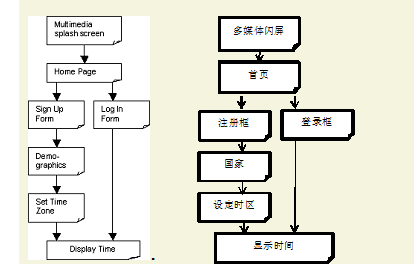

Joel on Software
This is a sample functional specification, a part of Joel on Software, a site about software management. It is intended for educational purposes, not to refer to a real product, in case you didn't notice by how stupid the whole thing was. Attention VCs, especially dim-witted ones: this product idea can be built for $5m at $20m-pre.
WhatTimeIsIt.com
Functional Specification
Joel Spolsky
Last Updated: September 27, 2000
- CONFIDENTIAL -
? 2000 Fog Creek Software, Inc. All Rights Reserved.
Overview
WhatTimeIsIt.com is a service that tells people what time it is, over the web.
现在几点了.com是一项通过网络告诉人们现在几点了的服务。
This spec is not, by any stretch of the imagination, complete. All of the wording will need to be revised several times before it is finalized. The graphics and layout of the screens is shown here merely to illustrate the underlying functionality. The actual look and feel will be developed over time with the input of graphics designers and iterative user feedback.
这份规范，从来没有想过要是，完整的。 所有的措辞在敲定之前都需要修改几遍。图形和页面的布局只是为了展示相应的功能。实际的外观会逐步通过迭代的用户反馈输入由图形设计师设计完成。
This spec does not discuss the algorithms used by the time calculation engine, which will be discussed elsewhere. It simply discusses what the user sees when they interact with WhatTimeIsIt.com.
这份规范不会讨论时间计算引擎算法，这些算法将在其他地方讨论。本规范只讨论当用户和现在几点了.com交互时候的用户所能看见的东西。
Scenarios
In designing products, it helps to imagine a few real life stories of how actual (stereotypical) people would use them. We'll look at two scenarios.
在设计产品的时候，相信一些真实生活中的（立体的）人如何实际使用产品的故事很有帮助。我们将观察两个场景。
Scenario 1: Mike.
Mike is a busy executive. He is the president of a large, important company that makes dynamite-based products for children which are sold through national chains such as Toys 'R' Us. During the course of a typical day, he has many meetings with many very important people. Sometimes a man comes over from the bank to harass him for not paying the interest that was due three months ago on his line of credit. Sometimes another man comes from another bank trying to get him to sign up for another line of credit. Sometimes his venture capitalists (the nice people who gave Mike the money to start his business) visit him to complain that he is earning too much money. "A bonfire!" they demand. "Wall Street likes to see a bonfire!"
麦克是个业务繁忙的执行董事。他是一家很重要的大公司的总裁，该公司主要为儿童生产基于炸药的产品，这些产品会通过全国连锁店如 Toys‘R’Us卖出去。通常一天中，他会和许多非常重要的人物开很多会。有的时候银行的人回来骚扰他，因为他还没有还清记在他名下信用卡上三个月前就已经到期的帐单利息。有时候会有另一家银行的人来骚扰他，让他给另外一张信用卡账单签名。有时候他的风险投资商（那些投给麦克钱让他创业的好人）会拜访他并且抱怨说他赚太多钱了。“一场烟火!”他们要求道。”华尔街喜欢看烟火“。
These visitors are very upset if Mike has previously promised to meet with them at a certain time, but when that time comes around, Mike is nowhere to be found. This happens because Mike doesn't know what time it is. At his secretary's recommendation, Mike signs up for a WhatTimeIsIt.com account. Now, whenever Mike is wondering about the time, he simply logs onto WhatTimeIsIt.com, enters his username and password, and finds out the current time. He visits the site several times during the day: to find out when it's time for lunch, to check if he's late for the next meeting, etc. Towards the end of the day, in fact, from about 3:00 p.m. onwards, he checks the site increasingly frequently to see when it's time to go home. By 4:45 he's basically just hitting "Refresh" again and again.
如果麦克以前答应了在某个时候会见他们，但是到时候又找不到麦克，这些访客就会非常生气。因为麦克不知道现在几点了才会发生中情况。在他的秘书的推荐下，麦克注册了现在几点了.com的账户。现在不管什么时候麦克不知道时间，他只要登录现在几点了.com，输入他的用户名和密码，然后就能弄清楚现在的时间。他一天会访问这个站点若干次：弄清楚什么时候吃饭，检查下个会议是不是要迟到了，等等。在一天快结束的时候，实际上，大约从下午三点开始，往后，他就更加频繁的检查什么时候能回家了。到4点45的时候他基本上就一直在那儿一遍又一遍的按“刷新”。
Scenario 2: Cindy.
Cindy is a teenager in high school. She goes to a pretty pathetic public high school, and she's pretty smart, so when she gets home at 2:00 pm, it only takes her about 7 minutes (on average) to do her Algebra homework. None of her other teachers even bother to give her homework. Her baby brother (half brother) is vegged ou t in front of the only TV set watching Teletubbies, so she spends the afternoon (from 2:07 until about 6:30, when her new mommy serves dinner) surfing the net and chatting with her friends on AOL. She's always looking for exciting new web sites. As a result of typing "What Time Is It?" randomly into a search engine (by mistake, she meant to ask one of her friends using Instant Messenger) she gets to WhatTimeIsIt.com, and sets up a new account. She chooses a user name and "RyanPhillipe" as her password, selects her time zone, and voila -- finds out what time it is.
辛迪是个上高中的青少年。上着很可悲的公立高校，不过她很聪明，所以当她下午两点回到家的时候，她只要花（平均）7分钟来完成她的代数作业。他的其他老师甚至懒得给她布置作业。 她的小婴儿兄弟（半个兄弟）呆坐在电视机前面看着“天线宝宝”，所以她下午（从2：07到6：30，当她的新妈妈在做晚饭的时候）就上网然后在AOL上和她的朋友闲聊。她总是在寻找新的激动人心的网站。结果，当她随机往搜索引擎里输入“现在几点了？”（这是个误操作，她本打算在聊天器上问她朋友现在几点了的） 她访问了现在几点了.com，而且创建了新帐户。她选了个用户名，并以“RyanPhillipe”作为她的密码，选了时区，瞧 -- 然后就搞清楚了现在几点。
Non Goals
This version will not support the following features:
multiple time zones for one member. All members are assumed to be in the same time zone.
changing passwords.
appointments.
这个版本将不支持以下功能：
单一会员多时区支持，假定所有的会员始终在同一个时区。
修改密码。
约会。
WhatTimeIsIt.com Flowchart
We'll have time later to go into mind-numbing detail, but for now, let's look at a quick flowchart of the service so you get the big picture. This flowchart is not complete, but it does give you the right idea for the "storyboard" of using WhatTimeIsIt.com:
现在几点了.COM 流程图。
我们稍后后进入让人头皮发麻的细节，但现在，我们一起来看一下服务流程图，这样你能够得到一个宏观场景。这幅流程图并不完整，不过它确实给你提供了使用现在几点了.com故事板的正确思路：

Screen by Screen Specification
WhatTimeIsIt.com consists of quite a few different screens. Most screens will follow a standard format, with a look and feel to be designed in the future by a graphic designer. This document is more concerned with the functionality and the interaction design, not the exact look and layout.
现在几点了.com包含了若干页面。大部分的页面遵循标准格式，外观将由设计师将来设计。这份文档更侧重于功能和交互设计而不是精确的外观和布局。
All screens are created in HTML. (The single exception is the Splash Screen, which is created using Macromedia Shockwave).
所有页面都是用HTML创建（唯一例外是闪屏，将使用MacromediaFlash创建）。
Each screen in WhatTimeIsIt.com is known by a canonical name which will always appear, in this document, with an underline, so you know we're referring to a screen by name, for example, Home Page.
现在几点了.com的每一屏都会有一个在这篇文章里固定出现的典型名字，下划线标出，这样你就能知道我们在讨论一个页面的名字，例如，首页。
Splash Screen
An annoying, gratuitous Shockwave animation that plays stupid music and drives everyone crazy. Splash Screen will be commissioned by a high-paid graphics animation boutique in a loft in Soho from people who bring their dogs to work, wear found objects safety-pinned to their ears, and go to Starbucks four times before lunch.
一个烦人的，免费Flash动画，播放着愚蠢的音乐并且把每个人逼疯。闪屏由高薪精品SOHO动画设计师提供，这些人带着他们的狗在阁楼上不，耳朵上安全穿孔而且挂着一切你能想象的东西，吃午饭前去四次星巴克。
After the animation has played for about 10 seconds, a link that says "SKIP THIS" will fade into view in the bottom right corner. To avoid people seeing this and clicking on it, SKIP THIS will be so far down and to the right that most people won't see it. It should be at least 800 pixels from the left border of the animation and 600 pixels from the top.
这段动画在播放了大约10秒钟之后，一个标着“跳过”的链接会渐渐出现在画面的右下角。 为了避免人们能看见并且点击到，“跳过”链接会放在最最右下角不让大家看见。它的位置应该至少距左边框800像素，距上边框600像素 。
Clicking on SKIP THIS goes to Home Page. When the animation is complete, it will redirect the browser to Home Page automatically.
。点击“跳过”会到达 首页。 当动画结束的时候，也会自动把浏览器转到首页。
Open Issue
If Marketing allows, we should deposit a cookie on the user's computer if they click SKIP THIS which will cause the animation to always be skipped in the future. Frequent visitors should not have to see the animation more than once. I talked to Jim in Marketing about this and he's going to take point in convening a committee of Sales, Marketing, and PR to discuss.
如果市场部允许的话，如果用户点击“跳过”使动画在将来总是被跳过，我们将为每个用户的电脑存上块饼干。 频繁访问者不应该看见这段动画超过一次。 我跟市场部的Jim谈过一次，他说关于这点他会召集由销售，市场和公共关系的委员会来讨论。
Home Page
Displayed when the Shockwave animation is complete, the Home Page serves three purposes:
- Allow people to learn about the service and consider whether they want to sign up
- Allow members who have already signed up to log on
- Allow people who want to sign up to create an account.
当动画结束的时候显示，首页主要有三个用途：
The Home Page looks like this:
Welcome to WhatTimeIsIt.com, the service that tells you exactly what time it is!
(Your results may vary. We are not responsible for delays in transmission or on your computer which could cause the actual time to be a bit later than the time displayed. This service is provided as-is and is merely for entertainment purposes, not for accurate time-keeping. Do not stick WhatTimeIsIt.com in your ear or use it to clean your ear.)
WhatTimeIsIt.com is easy and fun. If you're not a member, sign up today and start finding out what time it is!
Not a member yet? Don't worry - membership is free! Yes, that's right, FREE! Just click here to sign up, and within minutes you'll be able to find out what time it is!
Privacy Notice | About Us | Jobs | Contact Us
About WhatTimeIsIt.com
首页看起来是这样的。
WhatTimeIsIt.com现在几点了.com
欢迎访问 现在几点了.com，本服务就是要告诉你现在几点了！ （你的结果可能会变化。如果传输延迟，或者你的电脑显示的时间和实际时间相比有点晚，我们概不负责。 这项服务就是这个样子，纯属娱乐，非准确计时。 请不要把 现在几点了.COM挂在耳边或者用它来清理你的耳朵。）
现在几点了.COM 简单而有趣。如果你还不是会员，今天就注册吧然后弄清楚现在几点了！ Already a member? Click here to log on!
已经是会员了？点击这里登录！
还不是会员？别担心 – 会员是免费的！ 是的，是免费的哦！ 请点击这里注册，几分钟之内你就能发现现在几点了！
隐私提示 | 关于我们 | 工作 | 联系我们 | 关于 现在几点了.COM
On this, and on all screens, clicking on the WhatTimeIsIt.com logo in the top left corner goes back to Home Page. 关于这点，在所有的页面上，点击 现在几点了.COM 左上方角落里的商标回到 首页。
Technical Note
Because of the high similarity between the various screens, some system of includes should be used on the server so that if the name of the service changes, or if we can't purchase the domain name we want, we'll be able to change all the screens in one place. I suggest Vignette Story Server. Sure, it's overkill. Sure, it costs $200,000. But it's a heck of a lot easier than using server-side includes! Clicking on the link that says "click here to log on" goes to Log In Form. Clicking on the link that says "click here to sign up" goes to Sign Up Form. The other five links display pages with static text to be provided by management, which are beyond the scope of this specification. They will not have to change very often.
因为在众多页面中的高度相似性，服务器端应该采用某种“包含”系统，这样当某些服务名字改变的时候，或者我们没法购买我们想要的域名，我们就能在一个地方修改所有的页面。 我建议使用故事简介服务器。 当然，有点大材小用的意思，当然，要花$200,000。但是这比用服务端包含要简单多了去了。
点击标着“点击这里登录”的链接转到 登录框页面。点击标示着“点击这里注册”的链接转到注册框页面。其他五个链接显示管理层提供的静态文字页面，不过这不是本规范的内容。这些内容不会经常变动。
Log In Form
The Log In Form is used by current members to log into their accounts in order to find out the current time. It looks like this:
WhatTimeIsIt.com
Please enter your email address:
Enter your password:
Forgot your password? Just enter your email address and we'll email it to you.
Not a member yet? Don't worry - membership is free! Yes, that's right, FREE! Just click here to sign up, and within minutes you'll be able to find out what time it is!
Privacy Notice | About Us | Jobs | Contact Us | About WhatTimeIsIt.com
登录框
当前会员使用登录框页面登录进他们的账户来查找当前时间，页面如下所示：
请输入电子邮箱地址：
请输入密码：
忘记你的密码了？输入电子邮箱地址，我们会把密码回寄给你。
现在几点了.COM
还不是会员？别担心 – 会员是免费的！ 是的，是免费的哦！ 请点击这里注册，几分钟之内你就能发现现在几点了！
隐私提示 | 关于我们 | 工作 | 联系我们 | 关于 现在几点了.COM
The right side of the screen behaves the same way as described previously under Home Page.
页面右侧和前面描述的首页是一样的。
The email box allows for up to 60 characters to be typed. The password box allows for up to 12 characters to be typed. To disguise them and prevent hacking, as the user types in the password box, asterisks (*) will appear instead of the characters that they type.
电子邮件框最多允许输入60个字符。密码框最多允许输入12个字符。为了区别和防止黑客攻击，用户在密码框输入密码的时候，将显示星号而不是他们输入的字符。
Technical Note
This is accomplished using
When the user clicks Log In, the following checks are performed on the server:
这可以通过使用标签完成。
当用户点击登录的时候，服务端将进行以下检查：
- If the email address was provided, but it could not be a real email address because it is not formatted correctly (e.g. there is no @ sign or it contains characters that are not permitted in email addresses by RFC-822), the server returns another page that looks just like Log In Form, only this time, a red error message is inserted above the address box, saying "The email address you provided is not valid. Please double check it." Although this text is in red, the text "Please enter your email address" still appears in black. The incorrect email address that the user originally typed will now be pre-populated in the edit box.
- If the email address was provided, but it does not correspond to a registered member, the server returns another page that looks just like Log In Form, only this time, a red error message is inserted above the address box, saying "The email address you provided is not a member. Please double check it. To become a member, click on the link on the right side of the screen." Although this text is in red, the text "Please enter your email address" still appears in black. The incorrect email address that the user originally typed will now be pre-populated in the edit box. [ Question to developers. Can we use JavaScript in this case so that if the user then clicks on the link to become a member, we automatically pre-populate the email address on the sign up form? ]
- If the email address was provided, and it does correspond to a registered member, but no password was typed at all, we send an email to that address containing the password. The subject of the email is "Your WhatTimeIsIt.com membership". The email is in plain text. The exact wording of this email is still being debated hotly by the board of directors and will be provided sometime before shipping. [ Developers: for now I suggest using a nasty word. That will light a fire under Chucks' seat. ]
- If the email address was provided, and it does correspond to a registered member, and a password was provided, but the password is incorrect, the server returns another page that looks just like Log In Form, only this time, a red error message is inserted above the password box, saying "The password you provided is not valid. Please double check it. Remember, passwords are case-sensitive." If the password typed does not contain any lower case alphabetic characters, we add this text to the message: "Perhaps you've accidentally turned on CAPS LOCK?" Whenever the password is incorrect, the Log In Form comes back with the password box clear.
- If the email address and password are OK, jump straight to Display Time.
Open Issue
Need to decide about JavaScript in case #2
需要决定 条件二中的JavaScript问题。
Open Issue
Need wording for password email from CEO
遗留问题
需要CEO提供密码重置邮件的文字表达。